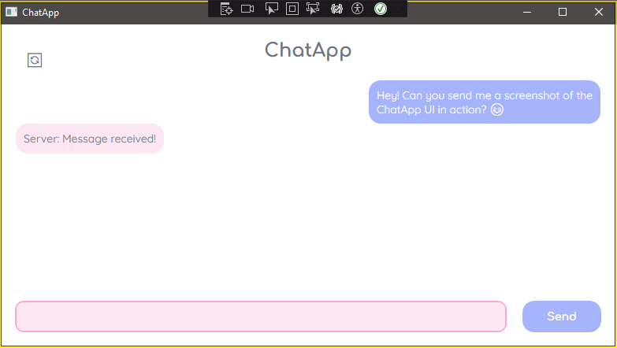
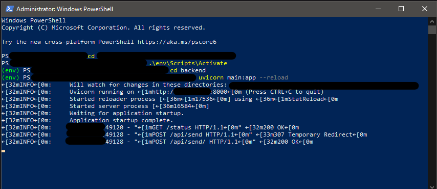

Introduction
Project Overview
ChatApp is a messaging application designed to provide a smooth user experience for chatting over the internet.
It uses Python FastAPI for the backend and C# WPF for the client-side interface.
Key Features
- Local Message Storage: Messages are saved locally using SQLite for offline access.
- Message Deletion Sync: Users can delete messages locally, with planned sync to the server.
- Server Responses: The server can send automated replies for a more interactive experience.
- Planned Features: Real-time messaging, user authentication, and encryption.
Design and Progress

The WPF client UI showing the message box, send button, and server connection status.

The backend FastAPI server running and logging incoming messages and responses.
×

Challenges and Solutions
- Message Sync Issues: Implementing two-way sync for message deletion required careful handling of client-server communication.
- UI Freezing: Learned how to use asynchronous calls to avoid UI freezing during background tasks.
- Future Focus: Implementing proper socket communication for real-time message updates.
Conclusion
The ChatApp demonstrates my skills in building multi-layered software with backend APIs and front-end interfaces. Future improvements include adding authentication, chat history, and real-time updates.